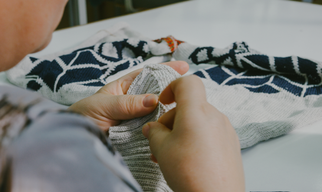

For example, if we order a fabric, and after the season, we have some of it left, we will use the same fabric for the next season again for a different piece. The same applies to trimmings and all kinds of smaller items that are used in our clothing. First, we use what we have, and then we can think of something new. This makes our production sometimes a little more challenging than it normally would be, but at the same time we‘re being creative with what‘s already there. And we think that this is a capability quite valuable in every part of our lives.


Quality
Within 15 years (from 2000 to 2014) worldwide clothing production doubled (!). At the same time, people buy 60% more clothes and keep them for half as long as 15 years ago. The phenomenon of fast fashion comes with some spectacular numbers. And spectacular social and environmental problems.
We think, the solution towards more sustainable fashion lies not simply in using different fabrics, but also comes with longevity.
And longevity is created through timelessness and quality. Timelessness obviously is a design issue. Quality - on the other hand - is created through a careful selection of all steps when producing clothes: the quality of the raw material, the production processes, the know-how of our suppliers. In order to deliver the highest quality, we keep production as local and centralized as possible.
We closely work with the same suppliers in Portugal, France, Italy, and Spain for years, which results in relationships that are built on trust and security. By keeping the distances short, the connection to our suppliers is more direct and enhanced by frequent visits. Therefore, we know how our suppliers work and they know how we think. Apart from that, we pay attention to the details. Trimmings, such as zippers and buttons, are a major reason for products to be thrown away. So by using high quality trimmings, we make your products last longer!